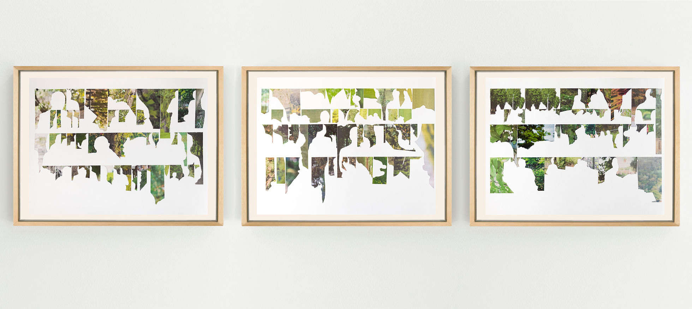
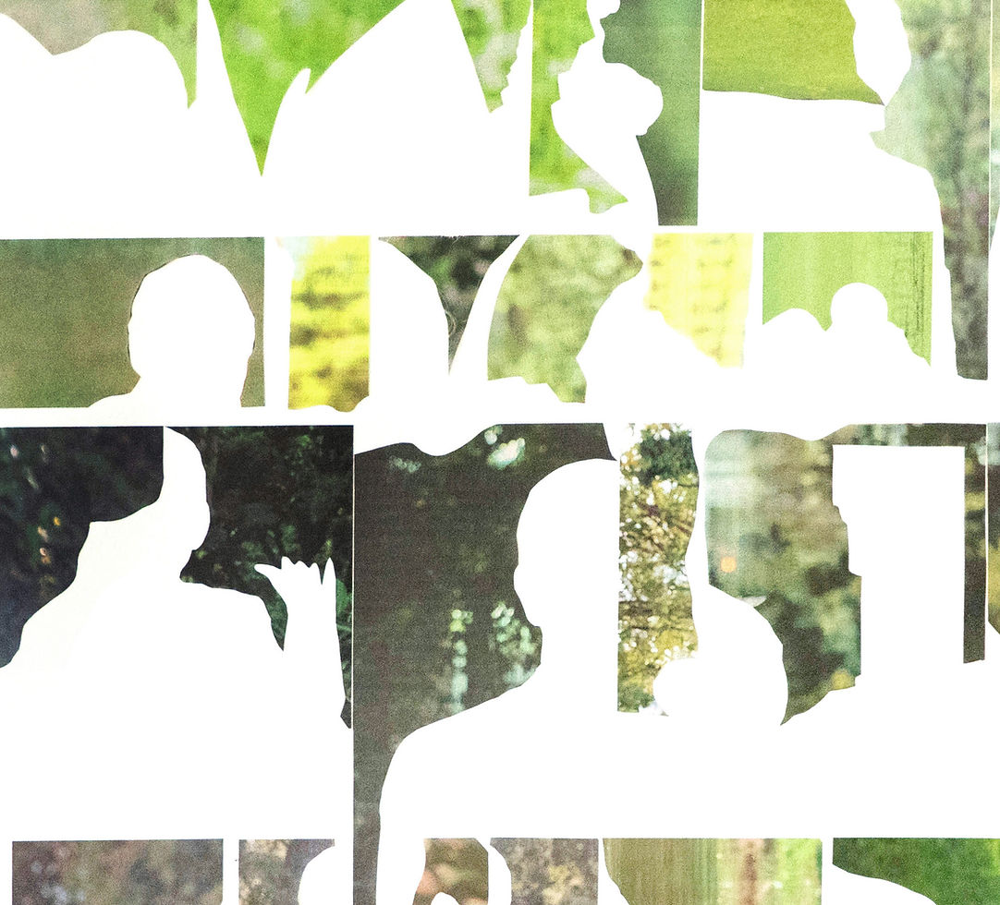
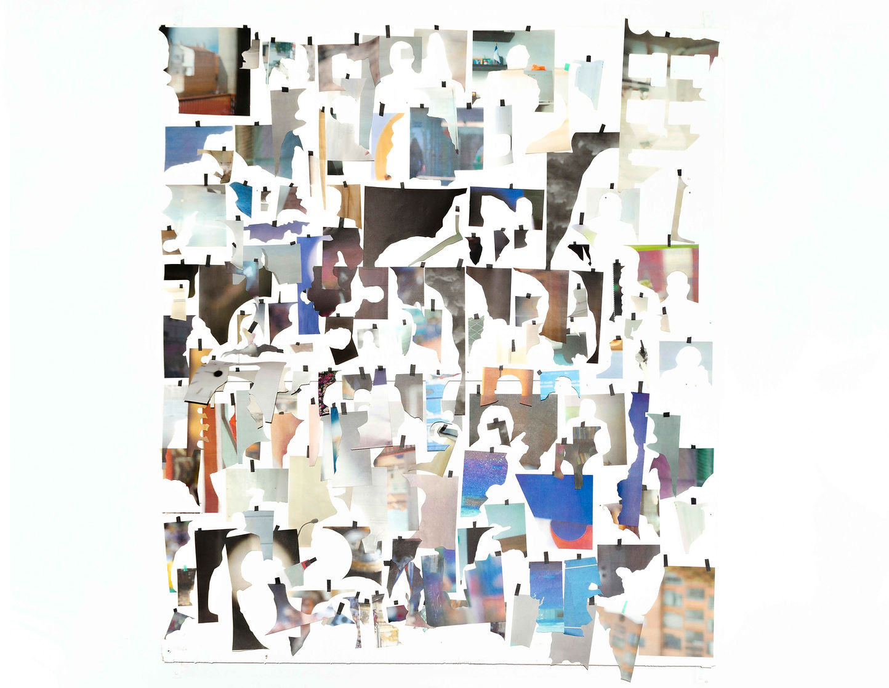

Inventario sobre lo que no veo. 74x57x3.5 cms c/u. Recortes de imágenes de naturaleza desenfocada / periódicos 2020-2022. 2022.

Detalle.

Instalación de 500 fragmentos de fondos de imágenes de periódicos (2020-2021). 1 metro x 1 metro.